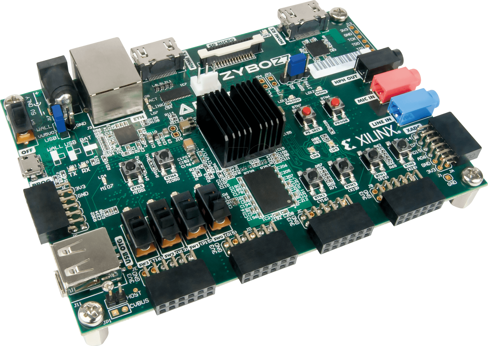
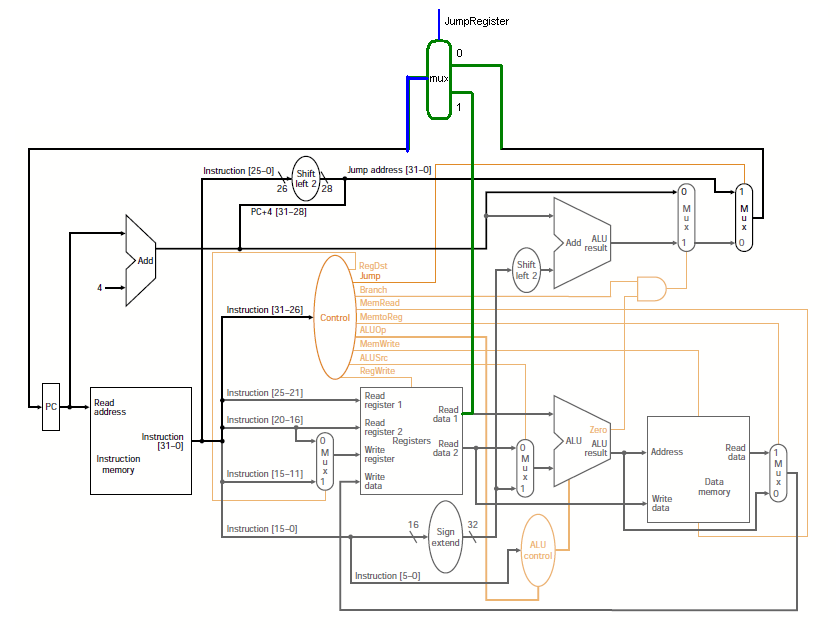

The Luke Lopez Page |
Home Page |
Contact/Information |
|---|
Creating a Verilog driver in ECEN 449 |
About the project:This project was done my sophmore year of collage at Texas A&M university. Spring of 2024 the class was based on developing tools to take Microprocessors to the edge. At the end we spent a 3 lab long session to develop a driver through a FPGA board to show how we can read and write values in any electronic device. |
Creating a single cyle CPU |
About the project:In Spring 2024 I developed a CPU engine that can read values form both cache and registers and compute simple mathematical equations. It was quite awesome to see how the design was implemented to develop this computer and really deepend the understanding of how coding and computer computation plays hand in hand. |
|---|